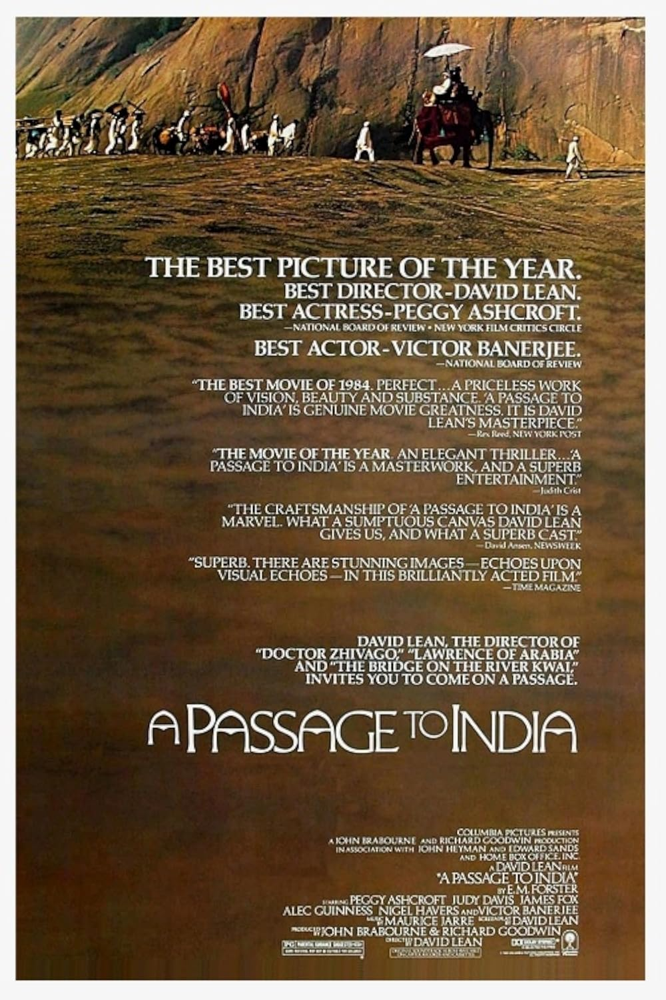

A Passage to India
57th Academy Awards
(Oscars 1985)
11 Nominations, 2 Awards
| Watched |
| Nominations | ||
|---|---|---|
| Category | Nominees | Result |
| Best Picture | John Brabourne and Richard Goodwin | Nominated |
| Actress in a Leading Role | Judy Davis | Nominated |
| Actress in a Supporting Role | Peggy Ashcroft | Won |
| Directing | David Lean | Nominated |
| Writing (Screenplay Based on Material from Another Medium) | David Lean | Nominated |
| Cinematography | Ernest Day | Nominated |
| Film Editing | David Lean | Nominated |
| Art Direction | Hugh Scaife, John Box, and Leslie Tomkins | Nominated |
| Costume Design | Judy Moorcroft | Nominated |
| Sound | Graham V. Hartstone, John Mitchell, Michael A. Carter, and Nicolas Le Messurier | Nominated |
| Music (Original Score) | Maurice Jarre | Won |